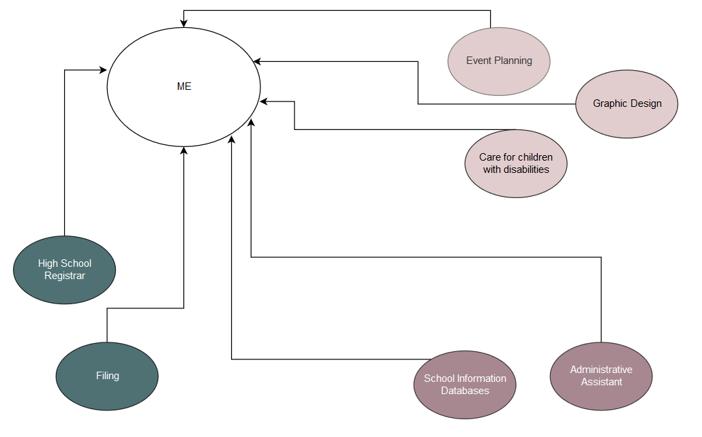

Professional Development
Career Buddies: Crystal Copeland & John Dunn
Learning Style
- Auditory: 25%
- Visual: 45%
- Tactile: 30%
Pro Dev Activities
Concept Map
Q & Q
Quantitative
- Restructured entire K-12 school's files
- Planned/ran over 30 events for 30-400 people.
- Ordered and inventoried curriculum for entire k-12 school
Qualitative
- Honest- Their is a such thing as to honest and honesty without compassion is cruelty.
- Intuitive- I cant base everything on intuition alone there has to be logig as well.
- Deliberate-wanting things a certain way can take up too much time, and it can be hard to hand over tasks.
Passion Projects
I really enjoy, the process of event planning. From the very first stages of planning there are so many
ways that an event can look creatively from themes, color schemes and how those can both effect your
menu. Along with the creative side there is also so many thing that need to get done. Without
the right organization skills, and people management it could never happen.
Golden Circle

Elevator Pitch
I am a Fullstack Web Developer looking for a challenging position with innovative work environment.
I have sharp eye for aesthetic and design as well as attention to small details.
Weekly Review
This week has been exhausting, mainly do too getting into the routine of things. I feel like im learning so much every day and Im really enjoying the work so far. Somethings there are things going over my head but I feel like thats mainly do to the fact that you cant know what you dont.